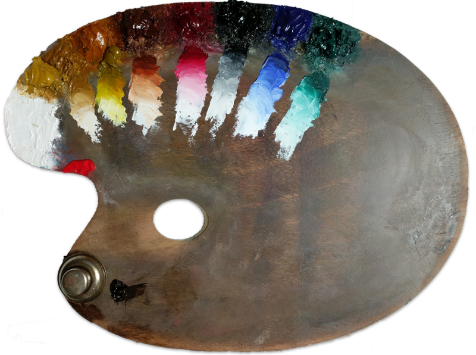

Thoughts on Color Mixing and Transparency
Over the past few years, I have spent a lot of time looking at art, and I have begun to notice a common technical error in the work of both newer and experienced painters alike—a lack of understanding of opacity when it comes to color mixing. My own work, in fact, suffered from the same types of errors, until I spent some time experimenting with watercolor, and I developed a new appreciation for the importance of transparency in the cleanliness of color mixtures.
A common refrain, from art books and artists' blogs, is that if a painter is interested in keeping color mixtures clean, one should avoid mixing more than two colors together. I can think of plenty of instances, though, where even two colors mixed together would produce an unpleasent result—take, for example, the chalky tint made from titanium white and cadmium red. So I would like to make an amendment of my own: a paint mixture should include no more than one opaque color. In my experience, any number of transparent colors can be mixed together without yielding a dirty color mixture, but even two opaque colors mixed starts to go downhill fast.
While a palette consisting of only transparent paints may not be suitable for painting sunny landscapes, one can use an almost fully transparent palette of colors indoors with great success. For anyone who has not explored direct-painting in oils with a glazing palette, I warmly recommend that you try.
My standard palette for still life painting, portraits, and master copies, consists of the following pigments. I get my colors mostly from Winsor & Newton and M. Graham, but I've included the pigment codes in case anyone uses other brands.
- Flake White Hue* (PW4+PW6)
- Nickel Azo Yellow (PY150)
- Raw Sienna (PY42+PY43)
- Burnt Sienna (PR101)
- Permanent Alizarin Crimson (PR206)
- Ivory Black* (PBK7)
- French Ultramarine (PB29)
- Viridian (PG18)
* Zinc white and Ivory Black have some known cracking issues when painted on flexible supports. I paint of rigid panels, with an oil-based ground, and I recommend that you do the same.
Sometimes I also use brighter colors, like Cerulean, Yellow Ocher, and Pyrrole Red, but I don't pull them out until the end of a painting, where I might need a strong accent.
I Launched a Website
I set up a website for sharing my paintings and programming projects, and for posting technical information about visual art and art history.